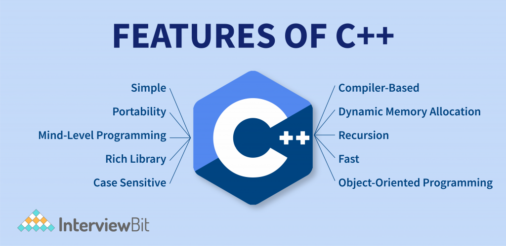

C++
C++ ile hızlı ve güvenilir yazılımlar geliştirebilirim.
C++ Nedir?
İşlevine göre özel bir dile sahip olan programlar, belirli komutlarla bilgisayar donanımlarının yürütülmesini sağlar. İçerisinde Java ve PHP dillerinin yer aldığı programlama dili çeşitleri arasında bulunan sınıflı C dili, B dilinden geliştirilir.
C++ nedir diye soran ve öğrenmek isteyenler için programlama dilini yakından incelemek gerekiyor. C++ temelde yüksek seviyede nesnel yönelimli olmasıyla ön plana çıkıyor. Yapay zekalı uygulamalardan video oyunlarının hazırlanmasına kadar birçok alanda C++ programlama dili kullanılıyor. C tabanlı program dilleri içinde C++ işlevselliğini, kullanıcı performansı bakımından çoğunlukla programcıdan alır.
C++ neden öğrenilmeli diye kısaca bahsetmek gerekirse; programcıların farklı alanlarda ve projelerde çalışabilmesini mümkün kılıyor. Tarihte Bell Labs bünyesinde 1979’da geliştirilen C++ aynı zamanda C program dili için eklenti görevi görüyor. Çok amaçlı yazılımlardan birisi olarak C++ diğer yandan manuel olarak hafıza yönetimi yapmayı gerektiriyor. Esnek program dillerinden olmasıyla sıklıkla tercih edilen C++ yazılımları geliştirmek için bazı avantajlar da barındırıyor. C++ programlama dilinin işlev ve avantajlarından etkili bir şekilde yararlanabilmek için program diline hakim olmak önem taşıyor.
C++ ile ne yapılır merak edenler için seçenekler güvenlik programlarından oyunlara kadar uzanıyor. Belirli alanlarda başarılı programlara imza atmak isteyenlere C++ güncel ve etkili bir alternatif oluşturuyor. Genellikle yazılım alanında kendini geliştirmeyi, kariyerini bilişim sektöründe ilerletmeyi veya çeşitli projelerde yer almayı hedefleyenler C++ öğrenmeli.

C++ Nerelerde Kullanılır?
Geçmişte sınıflı C olarak tanımlanan C++, dünya çapında tercih edilen popüler programlama dillerinden biri. Değişen programlama paradigmaları içinde bulunan C++, jenerik ve nesnel tabanlı bir dil barındırıyor. C++ nerelerde kullanılır sorusunun cevabı, yazılım geliştiricilerin programlama ihtiyaçları ile beraber değişiyor. Temelde C++ programlama dili sistem yazılımlarının yanı sıra gömülü, sürücü veya kullanıcı taraflı yazılımlarda da kullanılıyor. Yeni veri gruplarının yaratılması, var olan gruplardan yeni türlerin oluşturulmasında C++ tercih ediliyor. Programcılar, bilişim sektörüyle bağlantı faaliyetlerin yürütüldüğü her alanda C++ kullanarak pek çok yazılım hazırlayabiliyor. Veri girişini, akışını ve sınıflandırmasını kapsayan çeşitli yazılım işlerinde bir programcı olarak C++ diline yer verebilirsin.
C++ programlama dilinin sıklıkla tercih edildiği alanlar aşağıdaki gibi sıralanıyor:
- Bilgisayar Oyunları Geliştirme: Çoğu sevilen video oyunu programında C++ dili kullanılıyor ve genellikle programın motor bölümünde işlev sergiliyor. Motorun yanında C++ oyunun grafik kütüphaneleri için pratik şekilde kod oluşturulmasını sağlıyor.
- Yapay Zeka Uygulamaları: Ses ve görüntü tanımlamaktan derin öğrenme ve veri görselleştirmeye dek birçok işlem yapay zeka sistemleriyle gerçekleştiriliyor. C++ programlama dili, yapay zeka sistemlerindeki donanım ve yazılıma hızlı bir biçimde müdahale etmeye imkan tanıyor.
- Simülasyon İçerikli Uygulamalar: Birçok kod oluşturucu sistem ile birlikte simülasyon içeriklerinde otomatik olarak C++ desteğiyle dönüştürme ve sınıflandırma kodları üretilebiliyor.
- Görüntü ve Ses İşleme: Belirlenen arayüz programlarıyla beraber C++ yazılım kodlarından yararlanarak görüntü işleme komutları oluşturmak mümkün.
- Antivirüs Programları: Çeşitli teknolojik cihazlar için antivirüs koruma programlarını hazırlama aşamasında C++ diline yaygın şekilde başvuruluyor. C++ kodları sayesinde antivirüs koruma programları için etkili bir arayüz yaratılıyor.
- Veri Sınıflandırma Sistemleri: Oldukça çok sayıda verilerin özelliklerine göre istenen şekilde rahatça kategorize edilmesi için de C++ kullanılıyor.
- C++ öğrenmek, farklı alanlarda çalışabilmek için program uzantıları ile işlem aşamalarını bilmek gerekiyor. Ağırlıklı olarak System Files altında kategorize edilen C++ dosyalarının belli uzantıları bulunuyor. C++ uzantısı nedir sorusu için “.cpp”, “.h”, “.C” ve “.cc” uzantıları en çok rastlanan varyasyonlar arasında.
.png)
C++ Sunduğu Avantajlar Nelerdir?
Programlamaya başlarken C++ ne demek ve C++ nasıl yazılır öğrenmek, donanımlarla arayüzleri hazırlarken büyük önem taşıyor. C++, nesnel olarak genel amaçlara hizmet eden çok yönlü bir program dili olma özellikleri ile öne çıkıyor. Bu nesnel yönelimli program ile çalışmayı düşünenler öncelikle C++ nasıl yazılır öğrenmelidir. Örnek olarak C++ kullanarak “Hello World” yazısı şu şekilde yazdırılabilir;
Diğer yandan C++ ne işe yarar konusu, özellikle yazılımcılar ve programlama alanına ilgi duyanlar tarafından sıklıkla merak ediliyor. Profesyonel, işlevsel ve hızlı kodlar hazırlamak isteyenlere yönelik C++ dili, altyapı ve arayüz konusunda etkili çözümler sunuyor. Başlıca hedefi verilerin işlenmesi ve sınıflandırılması olan programlamalarda, dili gereği C++ programcılara farklı kolaylıklar sağlıyor:
- Nesnel Tabanlı Olması: Programcı odaklı C++ dili ile OOP olarak da bilinen nesnel yönelimli programlamalar kolayca gerçekleştiriliyor. Nesnelerin özelliklerine göre doğru biçimde sınıflandırılmasını mümkün kılan ve kodu sık tekrarlarla kullanılabilen C++ güvenilirliği arttırıyor.
- Taşınabilir Olması: C+, C ve Java programlama dillerine yakınlığı sayesinde C++, bir programcı için dil değişimlerinde hızlı bir adaptasyon yaratıyor. Bununla birlikte C++ dili Windows veya Linux gibi birçok ayrı işletim sistemi ve platforma entegre edilebiliyor.
- Çoklu Paradigma: C++ program stili bakımından jenerik, nesnel yönelimli ve zorunlu programlama paradigmalarına sahip. Mevcut programlama sistemleri genelinde C++ programcılara özel ve yeni bir program dili yaratma fırsatı da veriyor.
- Alt Seviye Programlaması: Sınıflı C dili aynı zamanda C programlama dilini kapsayarak alt seviyede bir veri işlemi gerçekleştirmeye imkan tanıyor. Veri manipülasyonları ve gömülü sistemler, C++ desteği ile programcılar tarafından oluşturuluyor.

C++ Sunduğu Dezavantajlar Nelerdir?
C++ ile çalışmak isteyenlerin çalışma alanına bağlı olarak diğer programlama dillerine aşina olması önerilir. C++ öncesinde, c+ nedir kısaca açıklamak gerekirse; C ile C++ arasında kalan bir programlama dilidir. Çoğunlukla C programlama dilleri içerisinde C++ yaygın şekilde çeşitli yazılımları geliştirirken tercih ediliyor. Dünya genelinde C++ kütüphaneleri de programcılara öğrenim ve uygulama süreçleri boyunca destek sağlıyor. Tüm programlama dilleri arasında C++, hem modern hem de gelişmeye devam eden bir dil olarak programcıları karşılıyor. C++ nedir ne işe yarar hakkında kapsamlı bilgi sahibi olabilmek için programın avantajları kadar dezavantajlarını da incelemek gerekiyor. Yazılım ve sistemleri geliştirmede kullanılan program dili açısından avantajlarına ek olarak C++ dezavantajları şu şekilde özetlenebilir:
- Güvenlik Problemleri: Nesnel yönelimli programlama dili veri güvenliğine rağmen bazı işaretçilerin kullanımı ve global değişkenler açısından güvenlik problemleri yaratabilir. C++ dili programcının bilgisi doğrultusunda işlenir ve gelişirken, gerekli noktalarda sistemsel aksaklıklar ortaya çıkar.
- Hafıza Erişimi ve Bellek Yönetimi: C++ programlama dili, yazılımcılara direkt hafıza erişim özelliğiyle cihaz belleğini tam denetleme yetkisi veriyor. Ancak, yazılımdaki gereksiz verilerin otomatik filtrelenmesi özelliğinden yoksun olarak bu işlemin manuel yapılmasını gerektiriyor.
- Thread Desteği: Yazılımda yeni kavramlardan thread, iş parçacıkları olarak programda aynı anda birçok işin yapılmasını sağlar. C++ ise yerleşik thread desteğinden yoksun olmakla birlikte lambda fonksiyonlarını güncel şekilde destekleyebilir durumdadır.
- Karmaşıklık: C++ programlama dili esnek ve geniş yapısı itibarıyla yazılım öğrenenler için karmaşık görünebilir. Pek çok kod satırına sahip C++ üzerinde iç içe işlem yapılmak istendiğinde uzantıları kullanmak önemli.
- Bellek Yönetimi ve Performans: Büyük ölçekli projelerde çalışırken programda kullanılan işaretçiler, bellek üzerinde önemli ölçüde yer kaplayabilir. Bellek yönetimine göre bu işaretçiler, sistemi yavaşlatabilir.